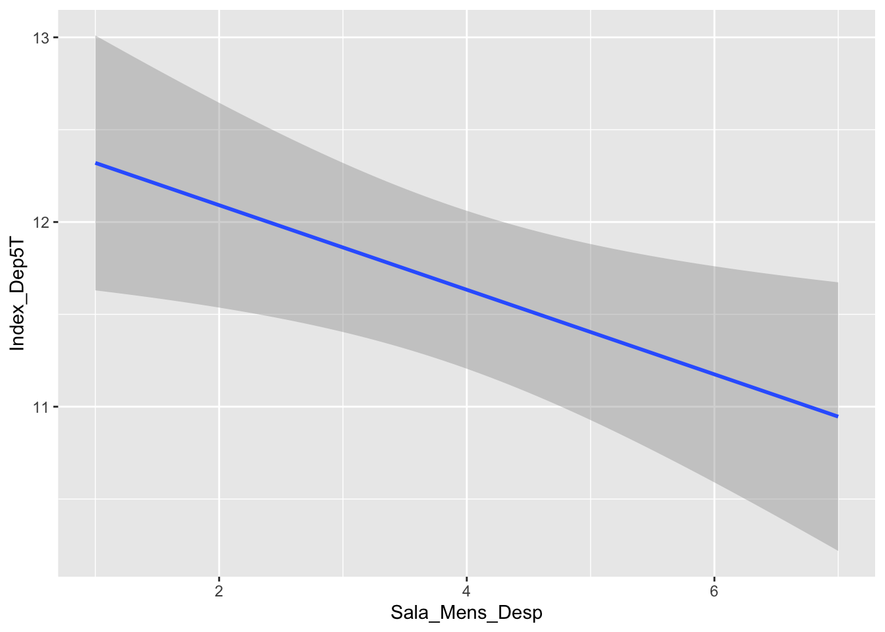

Chapter 21 #Como funciona la selección de modelos?
El acercamiento filosófico de selección de modelos es evaluar múltiples hipótesis y evaluar la evidencia que apoya estas. Por consecuencia el primer paso es articular un grupo de hipótesis razonables. Segundo es que cada hipótesis tiene que ser adaptado a los datos observados con una función matemática. El tercer paso es seleccionar un método de selección de modelos y comparar los resultados.
21.1 \(R^2\)
El acercamiento tradicional en la literatura es el \(R^2\) o el coeficiente de determinación. Que es un acercamiento sencillo de selección de modelo. Donde mayor es el valor de \(R^2\) mayor es el ajuste (Fit) del modelo. Este acercamiento no toma en cuenta la complejidad de los modelos y siempre selecciona modelos más complejos. La razón es que selecciona modelos más complejos es que a añadir más variables a un modelo (por ejemplo regresión lineal múltiples), añadir otra variable explica en parte la variación aunque esta nueva variable explica muy poco, pero ya que explica un componente aumenta el \(R^2\) . Por consecuencia no toma en cuenta el concepto de parsimonia, donde deberíamos seleccionar el modelos más sencillo tomando encenta el ajuste y la complejidad del modelo. Un método de selección de modelos debería tomar en cuenta la complejidad de los modelos y penalizar por modelos excesivamente complejos.
21.1.1 Ejemplo de Construcción de selección por \(R^2\)
Seleccionamos los datos de modulo regresión multiples (TF5). Sobre el Biomass Index y comoo esta corelacionado con la edad, el nivel de colesterol y glucosa en la sangre.
Code
| BMI | Age | Cholesterol | Glucose |
|---|---|---|---|
| 19.3 | 21 | 178 | 95 |
| 24.5 | 57 | 250 | 98 |
| 24.7 | 46 | 176 | 102 |
| 47.9 | 47 | 171 | 105 |
| 44.2 | 61 | 222 | 101 |
| 29.9 | 74 | 156 | 72 |
21.1.1.1 Installar los siguientes paquetes si no lo tienen instalado
Se construye un modelo con todos los parametros. Vemos que el \(R^2= 0.0785\).
Code
| BMI | |||
|---|---|---|---|
| Predictors | Estimates | CI | p |
| (Intercept) | 16.82 | 6.65 – 26.98 | 0.002 |
| Age | 0.04 | -0.07 – 0.15 | 0.469 |
| Cholesterol | 0.05 | -0.00 – 0.10 | 0.058 |
| Glucose | 0.02 | -0.01 – 0.05 | 0.192 |
| Observations | 58 | ||
| R2 / R2 adjusted | 0.127 / 0.079 | ||
Ahora evaluamos todas las posibles combinaciones de modelos. Considera la columna de \(R^2\) y los valores para cada modelo. Los que se observa es que el modelos con más variables tiene un \(R^2\) más alto seguido con modelos con dos variables. La pregunta principal, un modelo con cuatro variables con un \(R^2=.127\) es significativamente mejor que un modelo de 2 variables con un \(R^2=.1185\). Usando el método tradicional no hay mecanismos para seleccionar y evaluar cual de los modelos es el mejor tomando en cuenta la complejidad del modelo. NOTA: NA en la tabla quiere decir que esta variable no esta incluida en el modelo.
Code
| (Intercept) | Age | Cholesterol | Glucose | R^2 | df | logLik | AICc | delta | weight | |
|---|---|---|---|---|---|---|---|---|---|---|
| 7 | 17.952 | NA | 0.050975 | 0.022541 | 0.118463 | 4 | -187.63 | 384.01 | 0.00000 | 0.260568 |
| 3 | 20.012 | NA | 0.054149 | NA | 0.079020 | 3 | -188.90 | 384.24 | 0.22846 | 0.232441 |
| 4 | 17.967 | 0.060198 | 0.049483 | NA | 0.098811 | 4 | -188.27 | 385.29 | 1.27881 | 0.137477 |
| 8 | 16.815 | 0.041027 | 0.048190 | 0.019738 | 0.127045 | 5 | -187.34 | 385.84 | 1.83172 | 0.104272 |
| 5 | 27.167 | NA | NA | 0.025015 | 0.048912 | 3 | -189.83 | 386.10 | 2.09427 | 0.091445 |
| 1 | 30.108 | NA | NA | NA | 0.000000 | 2 | -191.28 | 386.78 | 2.77661 | 0.065011 |
| 2 | 26.304 | 0.078579 | NA | NA | 0.034720 | 3 | -190.26 | 386.96 | 2.95332 | 0.059514 |
| 6 | 24.855 | 0.057793 | NA | 0.020876 | 0.066354 | 4 | -189.29 | 387.34 | 3.33101 | 0.049272 |
21.2 Pruebas de modelos nulos
La prueba de verosimilitud (PV) es el método más utilizado de las pruebas de hipótesis nula. La PV compara pares de modelos, cuando el la verosimilitud de un modelos más complejo es significativamente más grande que el modelo sencillo, el modelo complejo es aceptado y vise versa. Tipicamente se usa como indice el chi cuadrado \(\chi^2\). En este caso al contrario del \(R^2\), la selección de un modelo más complejo cuando tiene un PV más grande tiene beneficio aunque sea más complejo el modelo. La desventaja es que prueba no es independiente por consecuencia infla el error de tipo I o sea el \(\alpha\). Otro punto importante es que la complejidad se añade de forma sucesiva a los modelos, por consecuencia
Tabla de métodos comunes para selección de modelos
En la siguiente tabla tenemos mencionado cinco métodos de selección de modelos. El primero que fue desarrollado fue el de Akaike Information criterion ( ref), por consecuencia es el más utilizado por ser el más conocido. Pero hay múltiples otros que no están mencionado aquí como el Bayes Factor y el Mallow’s \(C_p\). Puede encontrar más información en el siguiente enlace.
https://en.wikipedia.org/wiki/Model_selection#Criteria
| Selección de modelos | Formula | Criterio de selección |
|---|---|---|
| \(Verosimilitud\) | \(\\-2\left\{\ln\left[L(\theta_p\ |y\right)]+\ln\left[L(\theta_{p+q}\ | y\right)]\right\}\) | Ajuste |
| \(AIC\) | \(\\AIC=-2\ln\left[L(\theta_p\ |y\right)]+2p\) | Ajuste y complejidad |
| \(AIC_c\) | \(\\AIC_c=-2\ln\left[L(\theta_p\ |y\right)]+2p\left(\frac{n}{n-p-1}\right)\) | Ajuste y complejidad, con corrección para tamaño de muestra pequeña |
| \(Schwartz\) | \(\\SC=-2\ln\left[L(\theta_p\ |y\right)]+p\cdot\ln\left(n\right)\) | Ajuste y complejidad, tamaño de muestra |
| \(R_{adj}^2\) | \(R_{adj}^2=1-\frac{RSS/n-p-1}{\frac{\sum_{n=i}^n\left(y_i-\overline{y}\right)^2}{n-1}}\) | Ajuste |
** Las ideas y conceptos mencionado siguen en parte Johnson and Omland 2004.
21.3 Cual método es más apropriado?
Métodos que maximizan la verosimilitud solamente tiene una limitaciones en respeto a la parsimonia del modelo. En múltiples áreas de estudio se esta moviendo a métodos que no incluye solamente la verosimilitud pero la complejidad de los modelos. En general el meetodo que más se usa es el AIC en parte porque esta fundado en el Criterio de Información de Kullback-Leibler, pero hay otros que prefieren por ejemplo el criterio de información de Schwarz debido que este selecciona modelos más parsimonia. Nota que en este último toma en cuenta no solamente el ajuste, la complejidad pero el tamaño de muestra. El Schwarz es conocido también como el Bayesian Information Criterion, BIC, aunque no tiene nada de Bayesiano en el método de análisis. Para aclarar, el BIC no usa información previa para hacer los cálculos, y se puede usar tanto con análisis tradicional como Bayesiano.
21.4 Estimación de parámetros y múltiples modelos
En muchos estudios el objetivo principal es estimar los parámetros para poder inferir algún proceso biológico o comportamiento humano. Por ejemplo, ¿cual es la dosis apropiada de algún antibiótico para reducir el crecimiento de bacteria y el tiempo del tratamiento?. Cuando hay un buen apoyo para un modelo especifico, los estimados de los parámetros de la verosimilitud pueden ser utilizados. Pero de vez en cuando hay apoyo para múltiples modelos, en otra palabra hay apoyo iguales para múltiples modelos, lo que resulta un problema seleccionar un modelo que sea mejor que otro. En este caso si hay más de un modelo se utiliza el promedio de los modelos. Los estimados de los parámetros de un modelo promedio son robustos en dos aspectos, 1) reduce el sesgo de seleccionar modelos y 2) toma en cuenta la incertidumbre en los modelos.
21.5 Selección de Modelos entre muchos
¿Como seleccionar el mejor modelo entre muchos? Si por ejemplo usamos el indice de Akaike (AIC), cada modelo fue ajustado a los datos y el indice de \(AIC_i\) fue calculado, la diferencia entre los valores de AIC, \(\Delta_i\) y el mejor modelo, \(AIC_{\min}\) es calculado. El mejor modelo en el conjunto evaluado es el modelo con un AIC más pequeño, \(AIC_{\min}\).
\(\Delta _i=AIC_i-AIC_{\min }\)
La verosimilitud (likelihood) de un modelo, \(g_i\), dado los datos, \(y\), es calculado de la siguiente forma.
\(L(g_i\ |y)=\exp\left(\frac{-1}{2\cdot\Delta_i}\right)\),
Comparar pares de modelos, particularmente el mejor modelo y los otros, tiene un indice que se llama evidence ratio, ER y traducido aquí como la razón de evidencia.
\(ER=\frac{L(g_{mejor}\ |y)}{L(g_i\ |y)}\),
Los valores de verosimilitud se pueden normalizar para que la suma de los modelos sea 1.
\(W_i=\frac{\exp\left(-\frac{1}{2\cdot\Delta_i}\right)}{\sum_{j=i}^R\exp\left(-\frac{1}{2\cdot\Delta j}\right)}\),
Este valor conocido como el weight de Akaike, o el peso de los modelos puede ser interpretado como una probabilidad que el modelo \(i\) es el mejor modelo de los modelos evaluados.
21.6 Model Averaging:
Cuando no hay un modelo único apoyado por los datos, no hay apoyo sustancial para un modelo único. Modelos que no tienen mucho apoyo pudiese incluir ciertas condiciones, por ejemplo si se usa el peso de los modelos y este no es muy grande \(w_{best}<0.09\) o si la diferencia entre los modelos tienen un \(\Delta AIC\) de menor 2. En este caso se necesita calcular los promedios ponderado de los parámetros, \(\tilde{\theta}\).
\(\tilde{\theta}=\sum_{n=1}^Rw_i\tilde{\theta}_i\)
donde el \(\tilde{\theta}_i\) es el estimado de \(\tilde{\theta}\) del modelo \(i_{th}\) de los *mejores* modelos. De esta forma los parámetros del modelo están ponderado por su apoyo \(w_{best}\). En adición se puede calcular la varianza de los parámetros con la siguiente formula.
\(\hat{var}(\tilde{\theta})=\sum_{n=1}^Rw_i[\hat{var}\left(\tilde{\theta}\ |g_i\right)+\ (\tilde{\theta}-\hat{\theta})^2 ]\)
donde \(\hat{var}\left(\tilde{\theta}\ |g_i\right)\) es el estimado de la varianza de \(\theta\) del modelo \(i_{th}\). El estimador de varianza puede ser utilizado para evaluar la precisión de los estimados del conjunto de modelos considerados. Esto permite generar intervalos de confianza de los parámetros para tomar en consideración la incertidumbre de los modelos de selección.
hacer una lista de las condiciones para selección de modelos con su referencias
21.7 Inferencias de los modelos de selección
La selección de modelos es una herramienta para inferir procesos no observados basado en datos que demuestra un patrón. Datos que claramente apoya una hipótesis entre muchas evaluadas puede inferir procesos que pudiese haber generado los datos observados.
21.8 Paso a Paso
21.8.1 Primer paso: Construcción de los modelos
El primer paso es construir los modelos que queremos comparar, para facilitar el ejemplo usamos un modelos complejo y comparamos todas las diferentes alternativas. NOTA: que este no es necesariamente el mejor acercamiento, ya que uno debería tener a priori una serie de modelos candidatos.
Los datos son para evaluar sin hay efecto de cambio de nivel de ansiedad y depresión en la población de Puerto Rico luego del Huracán María. Los datos presentado son solamente parcial y incluye solamente un de los indices el del nivel de depresión después de 5 o más semanas luego del Huracán (Tremblay et al. sin publicar). La hipótesis es que algunos factores sociales y/o económico influencia el nivel de depresión en la gente.
Metadata:
Sexo, 1= Mujer; 2 = Hombres
Escolaridad, major el número más escolaridad tiene
Num_Pers_Hogar, Cantidad de persona que comparte el hogar familiar
Sala_Mens_Antes, El salario mensual antes del Huracán María, mayor el número mayor el salario
Sala_Mens_Desp, El salario mensual después del Huracán María, mayor el número mayor el salario
Index_Dep5T, Un indice de depresión 5 o más semanas después del Huracán.
21.8.2 Limpiar los datos
El primer paso es remover todos los participantes donde le falta algún información.
21.8.3 Construcción del modelo
| ...1 | Sexo | Escolaridad | Num_Pers_Hogar | Sala_Mens_Antes | Sala_Mens_Desp | Index_Dep5T |
|---|---|---|---|---|---|---|
| 1 | 1 | 4 | 3 | 4 | 4 | 19 |
| 2 | 1 | 4 | 3 | 2 | 2 | 16 |
| 3 | 1 | 7 | 4 | 2 | 2 | 9 |
| 4 | 1 | 4 | 2 | 5 | 3 | 2 |
| 5 | 2 | 4 | 5 | 6 | 6 | 17 |
| 6 | 2 | 5 | 2 | 2 | 7 | 8 |
Code

21.8.3.1 Observar el resultado del modelo lineal completo.
##
## Call:
## lm(formula = Index_Dep5T ~ factor(Sexo) + Escolaridad + Num_Pers_Hogar +
## Sala_Mens_Antes + Sala_Mens_Desp, data = DFMaria_student)
##
## Residuals:
## Min 1Q Median 3Q Max
## -14.1426 -3.8984 -0.3931 4.0240 20.6993
##
## Coefficients:
## Estimate Std. Error t value Pr(>|t|)
## (Intercept) 13.37228 0.86017 15.546 <2e-16 ***
## factor(Sexo)2 -0.71014 0.45979 -1.544 0.1228
## Escolaridad -0.34298 0.18922 -1.813 0.0702 .
## Num_Pers_Hogar 0.03879 0.17797 0.218 0.8275
## Sala_Mens_Antes 0.47255 0.27245 1.734 0.0831 .
## Sala_Mens_Desp -0.58913 0.27367 -2.153 0.0316 *
## ---
## Signif. codes: 0 '***' 0.001 '**' 0.01 '*' 0.05 '.' 0.1 ' ' 1
##
## Residual standard error: 6.872 on 995 degrees of freedom
## Multiple R-squared: 0.01324, Adjusted R-squared: 0.008285
## F-statistic: 2.671 on 5 and 995 DF, p-value: 0.0208421.8.3.2 Evaluar todas los modelos.
Se ordena los modelos comenzando con el mejor, y si resta el valor de AICc con el mejor modelo, menor es el AICc mejor es el modelo. Los modelos que se estará aceptando son los que tienen un delta de menos <-2.00 (comparando con el mejor modelo), \(\Delta_i=AIC_i-AIC_{\min}\). En otra palabra los modelos que difieren más de un AICc de 2.0 no se aceptan como buenos modelos. En este caso los seis primeros modelos son igual de bueno, y no hay evidencia que uno es mejor que el otro. Cuando hay más de un modelo se tiene que calcular los promedios ponderados de los parámetros \(\beta_i\) .
| AIC_BIC_delta | Interpretación |
|---|---|
| 0-2 | Poca evidencia que los modelos son diferentes |
| 2-4 | Evidencia que los modelos son diferentes |
| >4 | Mucha evidencia que los modelos son diferentes |
Con la función dredge del paquete MuMIn podemos evaluar todas las combinaciones de modelos
Code
library(MASS)
library(MuMIn)
options(na.action = "na.fail")
Huracan_Dep=lm(Index_Dep5T~Escolaridad+Num_Pers_Hogar+
Sala_Mens_Antes+ Sala_Mens_Desp, data=DFMaria_student) # El Modelo más completo
#model2
#summary(model2)
ALL_models=dredge(Huracan_Dep, rank="AIC", extra = c(BIC, "R^2")) # Evaluación de todas las combinaciones/alternativas (modelos)
library(formattable)
formattable(ALL_models, digits=4, format="html")| (Intercept) | Escolaridad | Num_Pers_Hogar | Sala_Mens_Antes | Sala_Mens_Desp | BIC | R^2 | df | logLik | AIC | delta | weight | |
|---|---|---|---|---|---|---|---|---|---|---|---|---|
| 14 | 13.19 | -0.3027 | NA | 0.45991 | -0.6005 | 6730 | 1.082e-02 | 5 | -3348 | 6706 | 0.0000 | 0.189345 |
| 13 | 12.40 | NA | NA | 0.43763 | -0.6402 | 6726 | 8.232e-03 | 4 | -3349 | 6706 | 0.6199 | 0.138880 |
| 10 | 13.30 | -0.2866 | NA | NA | -0.1716 | 6726 | 7.985e-03 | 4 | -3349 | 6707 | 0.8694 | 0.122596 |
| 9 | 12.55 | NA | NA | NA | -0.2290 | 6722 | 5.655e-03 | 3 | -3350 | 6707 | 1.2183 | 0.102969 |
| 2 | 13.03 | -0.3999 | NA | NA | NA | 6722 | 5.229e-03 | 3 | -3351 | 6707 | 1.6469 | 0.083108 |
| 16 | 13.07 | -0.3014 | 0.04136 | 0.45627 | -0.6000 | 6737 | 1.088e-02 | 6 | -3348 | 6708 | 1.9458 | 0.071570 |
| 15 | 12.26 | NA | 0.05008 | 0.43335 | -0.6393 | 6733 | 8.311e-03 | 5 | -3349 | 6708 | 2.5406 | 0.053159 |
| 12 | 13.13 | -0.2849 | 0.05848 | NA | -0.1757 | 6733 | 8.093e-03 | 5 | -3349 | 6709 | 2.7609 | 0.047613 |
| 6 | 13.19 | -0.3395 | NA | -0.09285 | NA | 6728 | 6.046e-03 | 4 | -3350 | 6709 | 2.8240 | 0.046134 |
| 11 | 12.36 | NA | 0.06593 | NA | -0.2332 | 6728 | 5.791e-03 | 4 | -3350 | 6709 | 3.0807 | 0.040578 |
| 4 | 12.96 | -0.4003 | 0.02282 | NA | NA | 6729 | 5.245e-03 | 4 | -3351 | 6709 | 3.6302 | 0.030830 |
| 5 | 12.30 | NA | NA | -0.15932 | NA | 6725 | 2.758e-03 | 3 | -3352 | 6710 | 4.1302 | 0.024010 |
| 8 | 13.06 | -0.3381 | 0.04460 | -0.09625 | NA | 6735 | 6.108e-03 | 5 | -3350 | 6711 | 4.7613 | 0.017513 |
| 1 | 11.66 | NA | NA | NA | NA | 6720 | 0.000e+00 | 2 | -3353 | 6711 | 4.8945 | 0.016384 |
| 7 | 12.14 | NA | 0.05470 | -0.16313 | NA | 6731 | 2.851e-03 | 4 | -3352 | 6712 | 6.0361 | 0.009258 |
| 3 | 11.61 | NA | 0.01597 | NA | NA | 6727 | 8.130e-06 | 3 | -3353 | 6713 | 6.8864 | 0.006052 |
21.8.4 Seleccionar los modelos
Seleccionar los modelos que tienen un delta AICc menor de 2 y calcular el promedio de los coeficientes de los modelos. Nota el conjunto de coeficientes debajo subset, esto son los coeficientes de las variables del conjunto de modelos que tienen un delta AICc menor de 2.
##
## Call:
## model.avg(object = ALL_models, subset = delta < 2)
##
## Component models:
## '134' '34' '14' '4' '1' '1234'
##
## Coefficients:
## (Intercept) Escolaridad Sala_Mens_Antes Sala_Mens_Desp Num_Pers_Hogar
## full 12.93159 -0.2078493 0.2547956 -0.4095744 0.004178587
## subset 12.93159 -0.3155782 0.4515174 -0.4640050 0.041363512Code
21.8.5 Extraer los parametros del modelo, usando las sigueientes funciones
## [1] "Estimate" "Std..Error" "Adjusted.SE" "z.value" "Pr...z.."| Estimate | Std..Error | Adjusted.SE | z.value | Pr...z.. |
|---|---|---|---|---|
| 12.9 | 0.703 | 0.704 | 18.4 | 0 |
| -0.316 | 0.189 | 0.19 | 1.67 | 0.0959 |
| 0.452 | 0.272 | 0.272 | 1.66 | 0.0974 |
| -0.464 | 0.303 | 0.303 | 1.53 | 0.126 |
| 0.0414 | 0.178 | 0.178 | 0.232 | 0.817 |
Code
## [1] TRUE21.8.6 Intervalos de Confianza
Los Intervalos de confianza de los parámetros se extraje del modelo usando la siguiente funciones.
Code
| Variables | Coef_Estimate | Std_Error | AdjustedSE | z_value | p_value | LowerBound | UpperBound |
|---|---|---|---|---|---|---|---|
| (Intercept) | 12.9 | 0.703 | 0.704 | 18.4 | 0 | 11.5 | 14.3 |
| Escolaridad | -0.316 | 0.189 | 0.19 | 1.67 | 0.0959 | -0.695 | 0.0635 |
| Sala_Mens_Antes | 0.452 | 0.272 | 0.272 | 1.66 | 0.0974 | -0.0934 | 0.996 |
| Sala_Mens_Desp | -0.464 | 0.303 | 0.303 | 1.53 | 0.126 | -1.07 | 0.143 |
| Num_Pers_Hogar | 0.0414 | 0.178 | 0.178 | 0.232 | 0.817 | -0.315 | 0.398 |
## [1] "Variables" "Coef_Estimate" "Std_Error" "AdjustedSE"
## [5] "z_value" "p_value" "LowerBound" "UpperBound"21.8.7 Visualizar los coeficientes con los intervalos de confianza
Code
ggplot(BMR, mapping=aes(x=Variables, y = Coef_Estimate,
ymin = LowerBound, ymax = UpperBound, colour=Variables))+
geom_point()+
geom_hline(yintercept=0.0, colour="blue")+
coord_flip()+
geom_pointrange()+
xlab("Variables")+
ylab("Mean Coefficients: Indice de depresión")+
rlt_theme+
theme(legend.position="none")Referencias:
Johnson, J. B., K. S. Omland. 2004. Model selection in ecology and evolution. TRENDS in Ecology and Evolution. 19:101-108. doi: 10.1016/j.tree.2003.10.013.
“Activities reported in this website was supported by the National Institute of General Medical Sciences of the National Institutes of Health under Award Number R25GM121270. The content is solely the responsibility of the authors and does not necessarily represent the official views of the National Institutes of Health.”``
aic